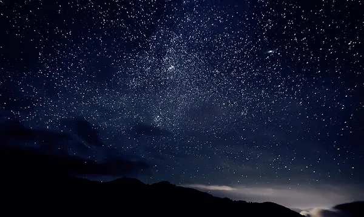
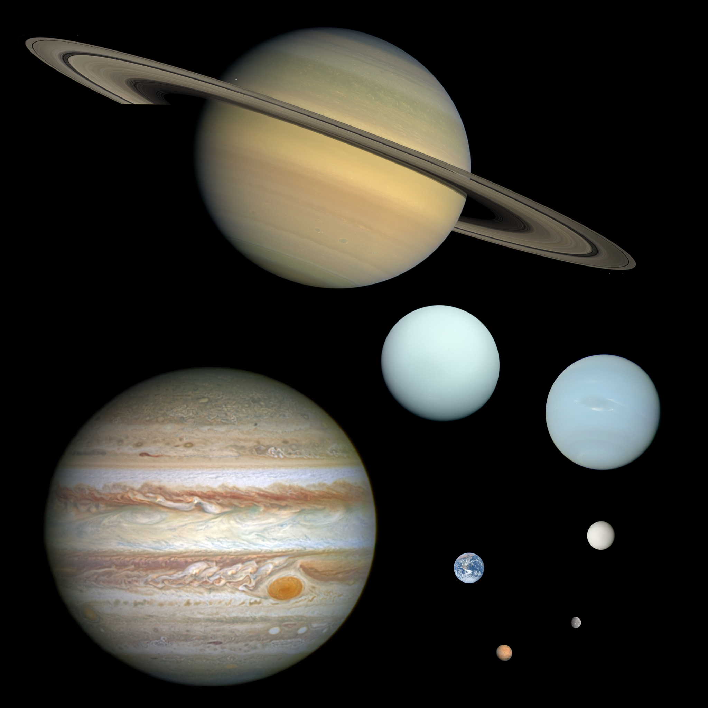
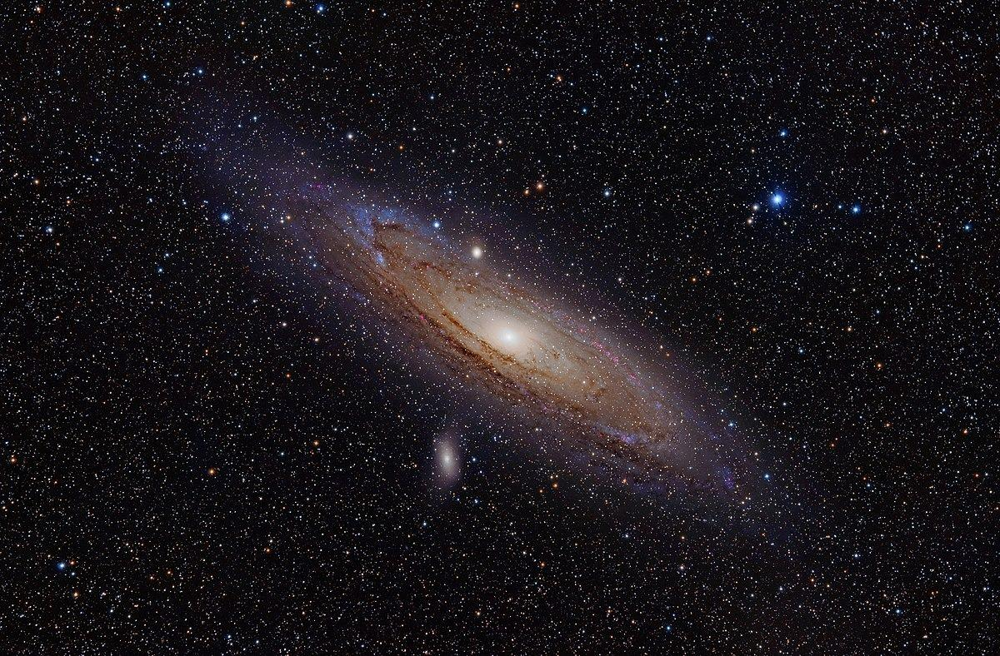
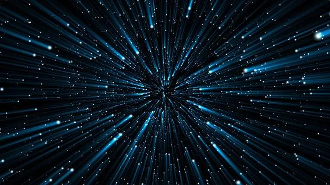

✨ Estrelas: O que são e do que são feitas

Estrelas são esferas de plasma que produzem energia em seus núcleos. Em estrelas como o Sol, a fusão transforma hidrogênio em hélio. O Sol é a estrela mais próxima da Terra e sua principal fonte de energia.
Elas nascem do colapso de nuvens de gás e poeira. Sua massa determina temperatura, brilho, tempo de vida e destino final. Estrelas massivas podem explodir como supernovas e deixar estrelas de nêutrons ou buracos negros; outras terminam como anãs brancas.
O Diagrama de Hertzsprung-Russell relaciona brilho e temperatura e ajuda os astrônomos a estudar a evolução estelar. Muitas estrelas fazem parte de sistemas binários ou aglomerados.
🌍 Planetas Terrestres e Gasosos: Diferenças

Mercúrio, Vênus, Terra e Marte são planetas rochosos: menores, densos e com superfície sólida. Júpiter e Saturno são gigantes gasosos, dominados por hidrogênio e hélio. Urano e Netuno são gigantes gelados, ricos em água, amônia e metano em seu interior.
Os gigantes não têm uma superfície sólida bem definida como a Terra. Eles se formaram no disco de gás e poeira que cercava o Sol jovem, mas cada planeta tem composição e estrutura próprias.
Essa divisão ajuda a entender a formação e a organização do Sistema Solar.
🌌 Galáxias e a Galáxia Andrômeda

Galáxias são sistemas unidos pela gravidade, formados por estrelas, gás, poeira e matéria escura. Podem ser espirais, elípticas ou irregulares e variam muito em tamanho.
Interações gravitacionais podem deformar galáxias e acelerar o nascimento de estrelas. Muitas possuem um buraco negro supermassivo no centro, mas sua atividade varia.
A matéria escura é inferida pelos efeitos gravitacionais e pode representar a maior parte da massa de uma galáxia, embora sua natureza continue desconhecida.
Galáxias se organizam em grupos e aglomerados, conectados em uma grande teia cósmica de filamentos e vazios.
A Galáxia de Andrômeda (M31) é uma espiral localizada a cerca de 2,5 milhões de anos-luz, a maior do nosso Grupo Local. Por décadas, astrônomos trataram como praticamente certa uma colisão entre Andrômeda e a Via Láctea daqui a bilhões de anos. Uma reanálise de 2025 com dados dos telescópios Hubble e Gaia, no entanto, mostrou que a chance real de uma fusão nos próximos 10 bilhões de anos é de apenas cerca de 50%, considerando a influência gravitacional de galáxias satélites como a Grande Nuvem de Magalhães.
O nome “galáxia” vem do grego e se relaciona a “leitoso”, uma referência à aparência da Via Láctea.
⚡ A Luz e sua Velocidade

A luz, ou luz visível, é uma forma de radiação eletromagnética que pode ser percebida pelo olho humano. Ela ocupa uma faixa do espectro eletromagnético entre os comprimentos de onda de 400 a 700 nanômetros, entre o infravermelho e o ultravioleta.
As principais propriedades da luz visível incluem intensidade, direção de propagação, espectro de frequência (ou comprimento de onda) e polarização. No vácuo, sua velocidade é de aproximadamente 299.792.458 metros por segundo — uma das constantes fundamentais da física.
Em física, o termo "luz" pode abranger toda radiação eletromagnética, como micro-ondas, ondas de rádio, raios X e até raios gama. A luz se comporta tanto como onda quanto como partícula, fenômeno conhecido como dualidade onda-partícula. Quando absorvida, sua energia se manifesta como fótons — as partículas fundamentais da luz.
Essa natureza complexa é estudada pela área da física chamada ótica, que investiga o comportamento e as propriedades da luz em diversas situações.
A principal fonte de luz natural na Terra é o Sol. No passado, o fogo foi uma importante fonte de iluminação, desde fogueiras até lamparinas. Com o avanço da tecnologia, a luz elétrica tornou-se predominante no cotidiano humano.